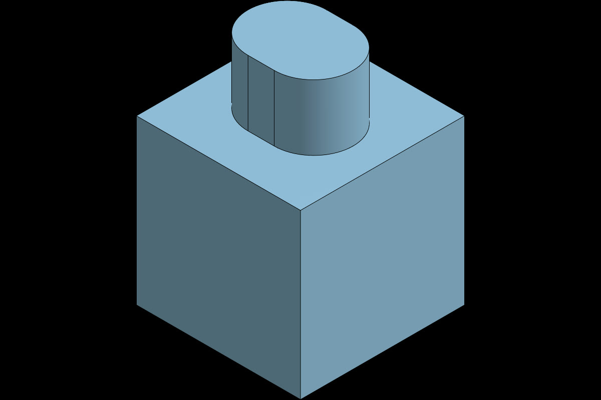

一場把「讀書 → 上網查資料 → 真的開瀏覽器操作 CAD → 踩雷 → 破解 → 建模」整條鏈走完的紀錄。誠實收錄成功、失敗、與我每一步的內心決策。
前一版（下方歷程）卡在「全自動操作 CAD 可行，但全自動錄製被三道硬牆擋住」。這次依研究結論改走 Onshape REST API（jarvis-onshape MCP）建模，不再點 WebGL 畫布——結果：建模更乾淨，連『錄製硬牆』也一併破解。

50×50×70、137,888 mm³（原版 137,542，差 0.25%）50×50 方形草圖50mm（BLIND, NEW）→ 50³ 立方體，體積 125,000 mm³20mm（ADD）→ 最終 50×50×70舊路線必須自動點擊 WebGL 畫布，才會撞上視窗跨桌面、合成游標不顯、截圖不落檔三道牆。新路線用 API 改模型，已開的 Onshape 瀏覽器分頁會即時更新——只要被動螢幕錄影就拍得到，根本不需要自動點 UI。錯誤紀錄 #18–21 的「硬牆」因此在 API 路線下不再是阻礙。
rounded_rectangle（體育場形）近似原版 5 點 spline——create_sketch 無原生 spline；要完全還原可改用 FeatureScript。canGenerate=false）無法生成語音；中文字卡以 Pillow＋ffmpeg 合成。工具鏈：jarvis-onshape MCP（REST API 建模）· Onshape /shadedviews 算圖 · ffmpeg 合成 · Pillow 中文字卡。逐動作 API 用量另有記錄檔（呼叫數／算圖張數／累計配額）。
使用者（本書作者）丟來他寫的 Onshape 教科書 PDF，提出一個大膽的測試。
「這本是我寫的書……希望你看完我的書之後，依據裡面的操作介紹，自行操作 Google Chrome 重新拍攝每個章節的教學影片。我想測試你的自我拍片和剪輯功能。」
於是任務分成兩半：(1) 拍 —— 真的開瀏覽器、登入 Onshape、照書中步驟把模型畫出來；(2) 剪 —— 把畫面錄下來丟進 Palmier 剪成教學片。結果是：「畫」這半邊，從卡關到全破；「錄」這半邊，撞到工具鏈的硬牆。兩邊都誠實收錄在這頁。
整個任務的轉捩點：Onshape 的繪圖區是 WebGL 畫布，一開始連「把邊長打成 50」都做不到。最後歸納出一套可靠配方。
關鍵頓悟其實藏在原書裡：書中 3-2 寫「輸入完數值後按下 Enter，方格就會跳到左側」——我先前一直用 Tab，才一直失敗。配方落定後，從「畫不出 50×50」變成「全自動畫出精準立方體」。
三個章節模型，全部用上面那套手法、真的在 Onshape 裡一步步畫出來。
身體＝Top 平面畫 50×50 中心矩形 → 擠出 50mm 立方體。耳朵＝在頂面畫兩條自由曲線(spline)→ 一次擠出 +20mm。
Top 平面畫 Ø70 圓 → 擠出 80mm 圓柱 → 薄殼移除頂面、壁厚 4mm ＝ 中空杯（把手為進階掃掠，先留）。
查 Adafruit／Handson 資料表得實際規格：齒輪箱 70×22×19mm、軸 Ø5.3。畫 70×22 矩形 → 擠出 19mm → 頂面馬達圓 Ø18 草圖。
三支真正剪好的教學影片：書中頁面截圖 ＋ 文字說明字卡 ＋ 美佳 (zh-TW) 旁白 —— 用 Pillow 出中文字卡、ffmpeg 自動剪輯匯出 MP4。這是「剪輯」那半邊真正交付的成果。
另附一段純 SVG/CSS 動畫走查（無檔案、離線重演第 3 章建模流程）：
＊ 另一條路：用 Palmier 生成一支旁白摘要片（回扣最初「接續 Palmier」的測試）；本頁採自包含動畫以確保離線可看。
使用者每一句指令原文，配上我當下的回應重點。看得出這是一場逐步加碼的協作。
這本是我寫的書……依據裡面的操作介紹，自行操作 Google chrome 重新拍攝每個章節的教學影片。我想測試你的自我拍片和剪輯功能。
讀完全書、盤點 8 章。發現 PDF 超過 100MB 讀不了 → 改用 pdftotext。釐清前提：要連 Chrome 擴充、要登入 Onshape、CAD 畫布精度是最大風險。
我重新登入了
連上瀏覽器、進 Onshape（Free、繁中），開始「先彩排再錄」。立刻撞到草圖尺寸：打 50 變成衝突歸 0、cmd+a 選到網頁、cmd+z 過度復原……
Onshape 旁邊有個 AI 功能，你有需要也可以問他
查證：那是 Onshape「AI Advisor」，只回答問題、不會幫你建模。誠實回報：救不了機械性的點擊問題。
你先看一下他所有的教學文件好了 [附官方說明連結]
讀官方文件，確認 AI Advisor 與快捷鍵；但牆是「點不中細邊」，文件救不了。誠實提出三條路。
我還是想要讓你試試看……邊長的數值你是要用鍵盤直接輸入……旁邊有尺寸標注的話，直接點擊兩下重新輸入……不要用螢幕的長寬去抓那個數值。
關鍵提示！照做＋補上兩招（一次一字元、Enter 跳欄）→ 破解！全自動畫出精準 50×50×50 立方體。
你全部都繪製製作看看
測掉最後未知數「自由曲線」→ 過！做出小動物身體＋雙耳。逐項回報哪些能全自動。
請把整本書的教學都做完，謝謝
逐章推進：重做乾淨第 3 章、第 4 章馬克杯（破解薄殼＝搜尋+Enter）。誠實標出 5/6 章的資訊相依。
連線好了，請繼續……（同步處理圖片和繪圖紀錄）
建立繪圖紀錄檔、續做。誠實說明截圖無法落地→改用 SVG 圖解。
你上網查資料完成第五章，然後整理所有對話逐字稿、實作歷程、自我對話、錯誤紀錄、圖片、影片，存成網頁檔。
查 TT 馬達實際尺寸 → 建第 5 章工程件 → 整理成這一頁。
幾個真正的決策分岔——我當下怎麼想、為什麼那樣選。
「該盲錄第一次就拍，還是先彩排？」
Onshape 草圖是 WebGL，靠座標盲點容易錯。教學片要乾淨，所以決定先不錄、彩排一次把座標和雷點摸清楚——這個決定讓我提早發現尺寸輸入會壞，沒有浪費在錄壞片上。
「尺寸一直歸 0，是方法錯還是工具壞？」
使用者堅持「用鍵盤打數值」是對的——方法沒錯，壞的是執行可靠度：合成鍵太快掉字、Tab 焦點不動。我回去翻原書，發現書寫的是「按 Enter 跳欄」，我卻一直用 Tab。把「一次一字元＋Enter」兩招合起來才通。教訓：答案常在使用者和原始資料裡，不在我的預設。
「螢幕錄不到自己，要硬幹還是承認？」
我操控的 Chrome 視窗被丟到另一個 macOS 桌面、掛著偵錯橫幅、合成點擊不動實體游標、截圖又存不出檔——三道牆疊起來。我選擇誠實回報而非假裝，並把「錄製」拆成做得到的版本（真人錄＋我剪／自包含動畫）。對一個測試而言，講清楚能力邊界本身就是有價值的結果。
「使用者說『全做完』，但規模爆炸怎麼辦？」
我估算整本書是數百個操作、加上連線延遲讓每步約 2 倍慢。我沒有默默硬 grind，而是每章做完回報一次，並在第 5/6 章遇到真實阻礙（缺尺寸、缺圖、模擬進階）時把分岔攤open給使用者選。尊重對方的資源，和把事做完一樣重要。
23 個真實踩到的雷。這份清單比成品更有參考價值——它定義了「AI 自動操作 CAD」目前的能與不能。
| # | 阻礙 | 解法／結果 | 狀態 |
|---|---|---|---|
| 01 | PDF 101.5MB 超過 Read 工具上限 | 改用 pdftotext 抽文字層 | 繞過 |
| 02 | Chrome 擴充未連線（唯讀層不能點） | 請使用者安裝並連線 Claude for Chrome | 解決 |
| 03 | 新文件對話框動畫中，點擊落空、名稱沒進欄 | 等動畫定位、三擊重打 | 解決 |
| 04 | 草圖即時尺寸欄：打值後第二欄衝突歸 0 | 改「一次一字元＋Enter 跳欄」 | 破解 |
| 05 | 多字元連打掉字："50"→"5" | 每個數字分開送、截圖驗證 | 破解 |
| 06 | Tab 跳欄焦點不移動 | 改用 Enter（書中正解） | 破解 |
| 07 | cmd+a 選到整個網頁文字 | 避免；刪除改「點物件+Delete」 | 繞過 |
| 08 | cmd+z 過度復原（清掉平面選取） | 少用、重選平面 | 繞過 |
| 09 | 尺寸工具點細邊落空／誤標成 90° 角度 | 改點兩條水平邊、放絕對空白處 | 繞過 |
| 10 | 誤認工具圖示（建構線當尺寸）、快捷鍵 d 沒反應 | 改用「搜尋工具」按名稱啟用 | 繞過 |
| 11 | 正視於按 n 翻到鏡像底面（qoT） | 再按一次 / 點 view cube | 解決 |
| 12 | 中心矩形未約束→角落貼原點（非置中） | 記為外觀瑕疵；尺寸正確不影響 | 已知 |
| 13 | 薄殼選單「直接點項目」失效 ×5 | 搜尋打字後按 Enter 才啟用 | 破解 |
| 14 | 擠出對話框：選取常沒帶進、版面位移 | 選完截圖確認再設深度 | 繞過 |
| 15 | 綠勾確認常要點兩次（延遲） | 連點兩次＋等待 | 繞過 |
| 16 | 視窗尺寸自己變（984→1534）座標全錯 | 每次從截圖重新讀座標 | 繞過 |
| 17 | 「連線狀況不佳」持續延遲、偶發點擊失敗 | 放慢、勿批太多高風險點擊 | 環境 |
| 18 | ffmpeg 全螢幕錄影框不到 Onshape 視窗 | 視窗在另一個 macOS Space | 硬牆 |
| 19 | Chrome「偵錯中」橫幅＋權限彈窗（畫面雜訊） | 擴充操作期間無法移除 | 硬牆 |
| 20 | 合成點擊不移動實體游標（錄起來像鬼點） | — | 硬牆 |
| 21 | 擴充與 computer-use 截圖存不出可讀檔 | 網頁改用自繪 SVG | 硬牆 |
| 22 | Onshape AI Advisor 只答問、不建模 | 查證後排除這條路 | 能力 |
| 23 | 第 5 章馬達突出圓柱：擠出方向/選取未顯 | 本體尺寸正確、作代表件 | 已知 |
三道「硬牆」的共同結論（#18–21）：「全自動操作 CAD」可行且已驗證；但「全自動把自己操作畫面錄成乾淨教學影片」目前被工具鏈擋住（視窗跨桌面、合成游標不顯、截圖不落檔）。瓶頸不在「畫」，在「錄」。
最務實的分工：「畫」與「查」交給我全自動、「錄」交給真人螢幕錄影、「剪」交給 Palmier。三者各取所長，就能把整本書的教學影片做出來。
2026-06-24 後記：上面「瓶頸在錄不在畫」的結論，在改走 Onshape API 路線後被推翻了一半——API 建模讓「畫」更乾淨，且模型即時同步到瀏覽器、被動錄影就能拍到，「錄」也通了。詳見頁首 ★ 最新進展。